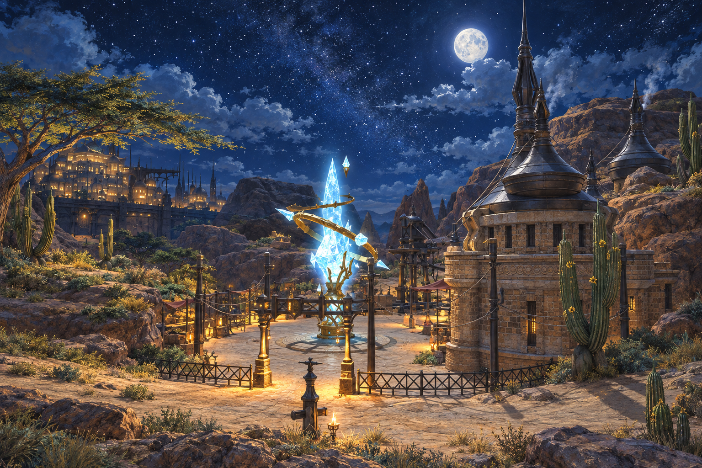
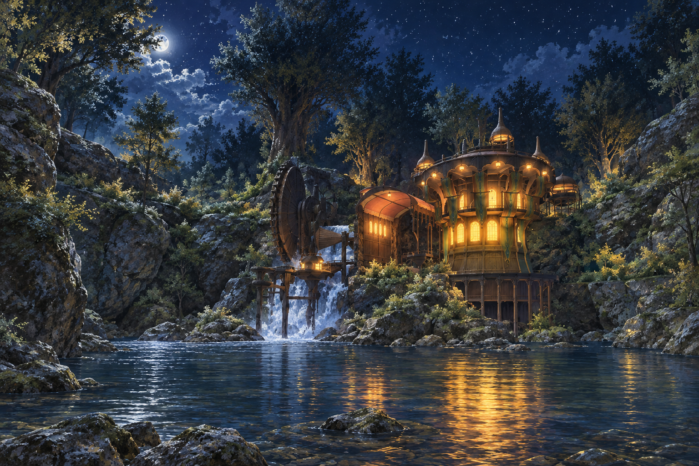
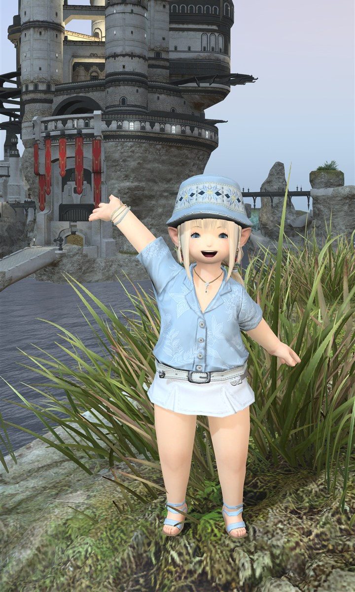
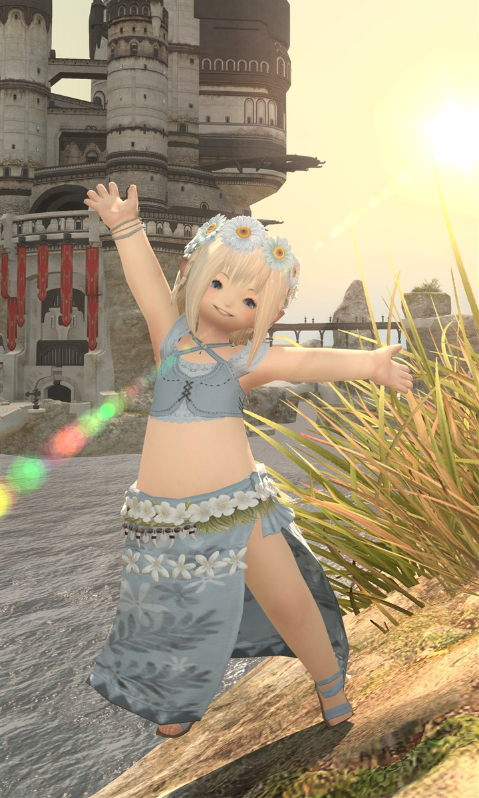
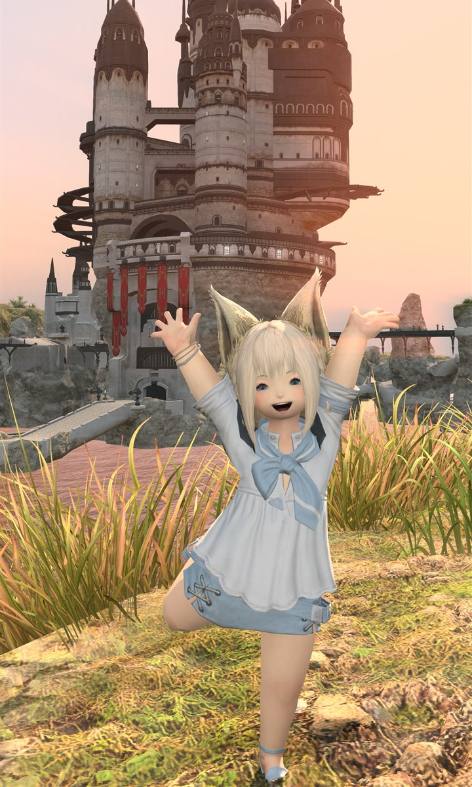

01THANALAN · 旅程起點中薩納蘭從沙與星光之間，展開今夜的相遇。X：22.0 Y：17.2第一站・集合啟程集合位置地圖＋跟著旗標，與光之戰士相聚。點擊放大 ↗⚑ 集合旗標 X：22.0 Y：17.2
02THE BLACK SHROUD · 第二站黑衣森林中央林區走入林間，讓微光引領下一段旅程。X：21.0 Y：16.6第二站・林間尋謎集合位置地圖＋跟著旗標，與光之戰士相聚。點擊放大 ↗⚑ 集合旗標 X：21.0 Y：16.6
03LA NOSCEA · 第三站中拉諾西亞跟著海風，將這一晚收進冒險的回憶。X：17.0 Y：20.7第三站・海風之約集合位置地圖＋跟著旗標，與光之戰士相聚。點擊放大 ↗⚑ 集合旗標 X：17.0 Y：20.7
03・中拉諾西亞藍白色・度假風跟著海風，換上一身輕盈的藍與白。襯衫、草帽、花飾或涼鞋，都能搭出海都的悠閒。海風襯衫花冠假期水手領日常